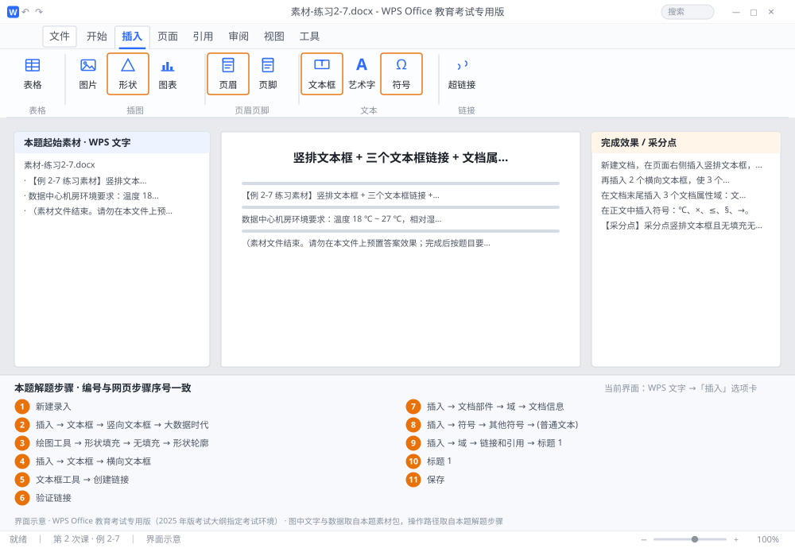

完成比对文档 · 例 2-7
竖排文本框 + 三个文本框链接 + 文档属性域 + StyleRef 页眉 ｜ 第 2 次课 / WPS 文字 ｜ 网页：实操-文字2.html ｜ 考试环境：WPS Office 教育考试专用版（2025 年版考试大纲指定考试环境）
用途 本页按修订后的题目要求与解题步骤生成，是交卷自查的结果基准：
逐项列出每一步应出现的可复核结果，配合模拟操作截图与解题结果文件使用。
它不是素材包的一部分，不会预置答案动作；起始素材仍从本题素材包下载。
一、本题起始素材包
目录：练习素材/练习2-7-文本框链接与域/ ｜
下载包：练习素材/下载/练习2-7-文本框链接与域.zip
二、题目要求
- 新建文档，在页面右侧插入竖排文本框，内容「大数据时代」，设为无填充、无轮廓。
- 再插入 2 个横向文本框，使 3 个文本框依次链接：第 1 个放不下的文字自动流到第 2 个、再流到第 3 个。
- 在文档末尾插入 3 个文档属性域：文件名、作者、保存日期。
- 在正文中插入符号：℃、×、≤、§、→。
- 在页眉中插入 StyleRef 域，自动显示当前页所属「标题 1」的文字。
- 保存为 学号-姓名-练习2-7.docx。
三、解题步骤（编号与下方核对表、截图编号一致）
- 新建录入。Ctrl+N，录入素材三行。
- 插竖排文本框。「插入」→「文本框」→「竖向文本框」→ 在页面右侧拖出 → 输入「大数据时代」。
- 去掉底色与边框。选中文本框 →「绘图工具」→「形状填充」→「无填充」；「形状轮廓」→「无轮廓」。
- 再插两个横向文本框。「插入」→「文本框」→「横向文本框」，在正文区域拖出两个，保持空白。
- 建立链接。选中第 1 个横向文本框（必须是已有文字的那个，或先输入一段文字）→「文本框工具」→「创建链接」→ 光标变成倾倒的杯子图标 → 单击第 2 个文本框；再用同样方法把第 2 个链接到第 3 个。
- 验证链接。在第 1 个文本框里粘贴一大段文字，超出部分应自动出现在第 2 个、再流入第 3 个。
- 插文档属性域。光标定位到文末 →「插入」→「文档部件」→「域」→ 类别选「文档信息」→ 分别插入 FileName、Author、SaveDate（每插一个点一次确定，中间用顿号或空格隔开）。
- 插符号。「插入」→「符号」→「其他符号」→ 字体选「(普通文本)」→ 找到 ℃、×、≤、§ 插入；→ 可在「Symbol」字体或「箭头」子集中找。
- 页眉放 StyleRef。双击页眉区域 →「插入」→「域」→ 类别「链接和引用」→ 域名 StyleRef → 样式名选「标题 1」→ 确定。
- 验证。给正文加一个「标题 1」样式的标题，翻到该页，页眉应自动显示这个标题。
- 保存。保存为 学号-姓名-练习2-7.docx。
四、完成效果 / 采分点
采分点竖排文本框且无填充无轮廓 · 3 个文本框已建立链接（溢出正确流转） · 文档属性域 3 个（FileName/Author/SaveDate） · 5 个符号全部插入且字形正确 · 页眉含 StyleRef 域并引用「标题 1」
五、逐项完成核对表
| 步骤 | 关键操作路径 | 应出现的结果（可复核） |
|---|
| 1 | 新建录入 | 新建录入 |
| 2 | 插竖排文本框 | 「插入」、「文本框」、「竖向文本框」、「大数据时代」 |
| 3 | 去掉底色与边框 | 「绘图工具」、「形状填充」、「无填充」、「形状轮廓」、「无轮廓」 |
| 4 | 再插两个横向文本框 | 「插入」、「文本框」、「横向文本框」 |
| 5 | 建立链接 | 「文本框工具」、「创建链接」 |
| 6 | 验证链接 | 验证链接 |
| 7 | 插文档属性域 | 「插入」、「文档部件」、「域」、「文档信息」 |
| 8 | 插符号 | 「插入」、「符号」、「其他符号」、「(普通文本)」、「Symbol」 |
| 9 | 页眉放 StyleRef | 「插入」、「域」、「链接和引用」、「标题 1」 |
| 10 | 验证 | 「标题 1」 |
| 11 | 保存 | 学号-姓名-练习2-7.docx |
六、模拟操作截图

界面示意 · WPS Office 教育考试专用版 · 橙色编号与本题解题步骤序号一致；
图中文字与数据取自本题素材包，功能入口取自本题解题步骤。
核对方法：按网页解题步骤完成并另存自己的成稿后，逐行比对本表第 3 列的
参数、公式、区域、文件名与对象数量；再对照网页「完成效果 / 采分点」检查版式是否一致。